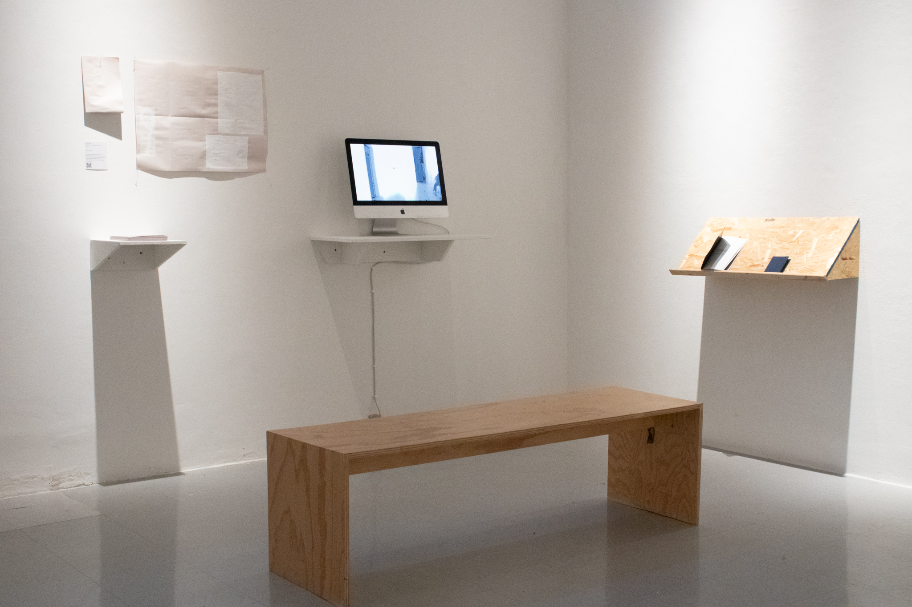
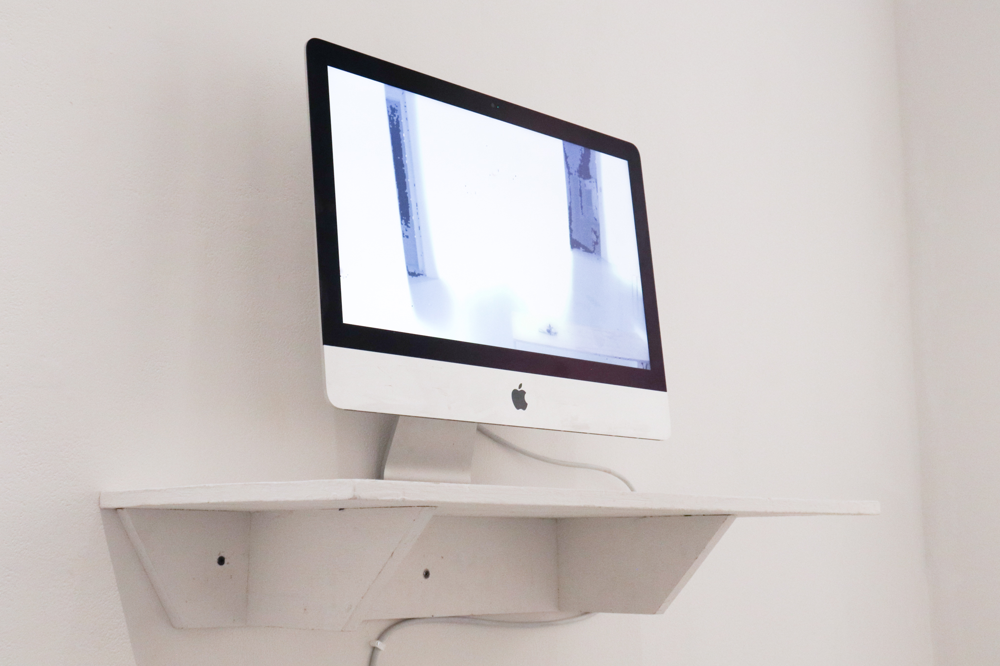
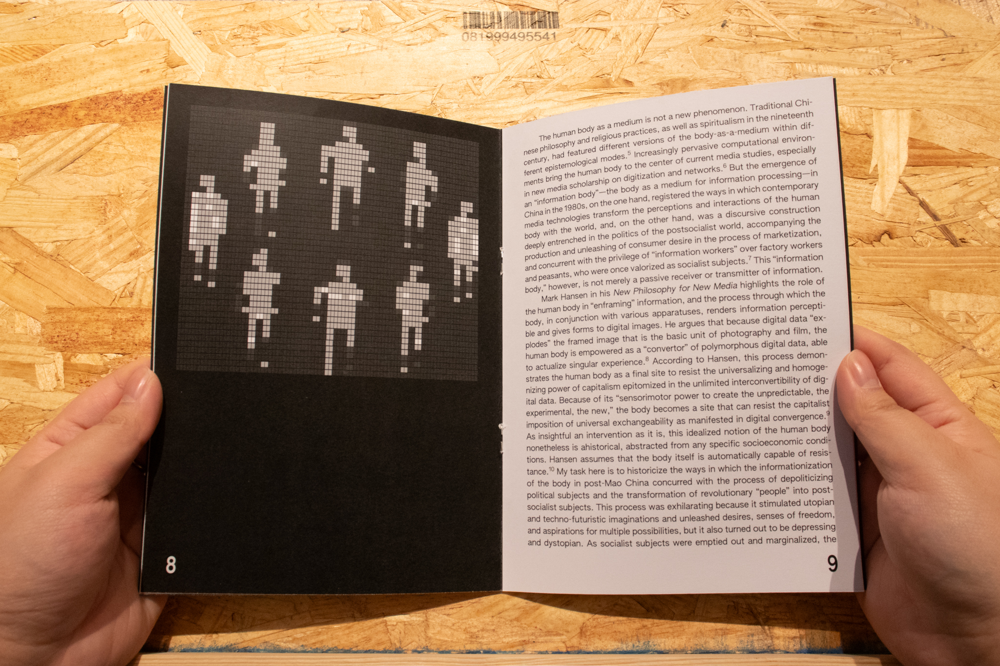
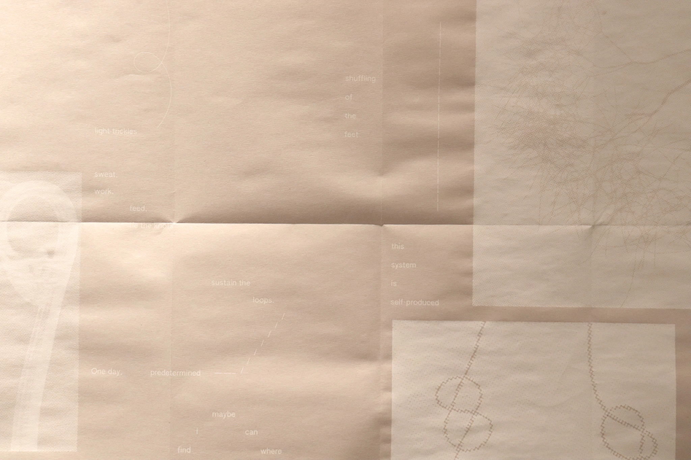
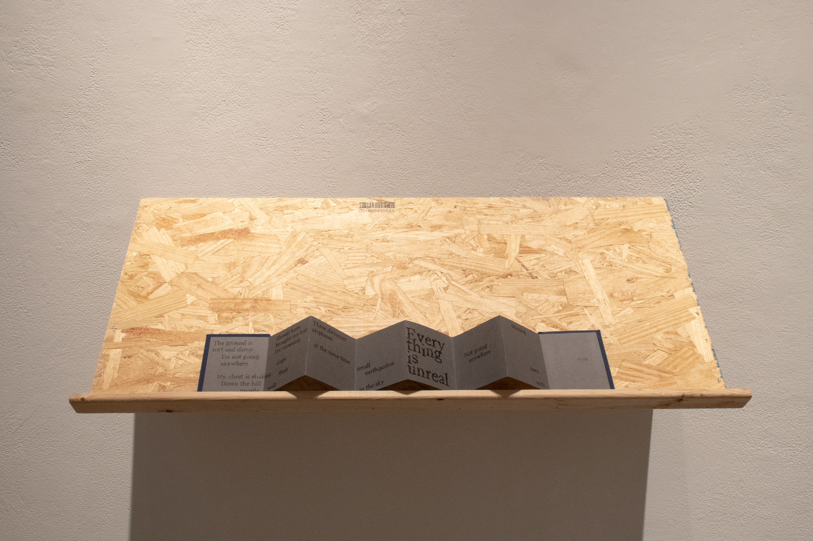

broken loops, uninterrupted sky
↳ Thesis Project
broken loops, uninterrupted sky features a collection of two short publications, spatial poetry, and an interactive live feed, exploring media technologies, feedback loops, and the body as a medium for information processing.
Through fleeting moments, these pieces reflect a quiet unease with the monotony of daily life.
Includes a booklet design of the introduction to Xiao Liu's Information Fantasies, and a handmade accordion book of "Everything is unreal," a song by Astrid Sonne.





